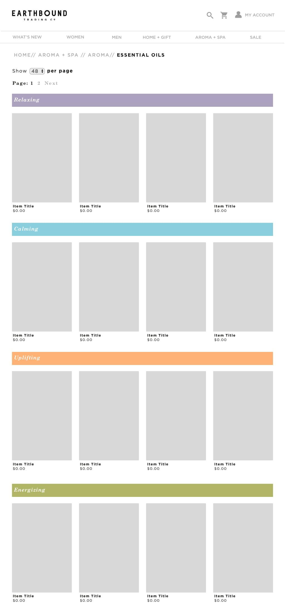
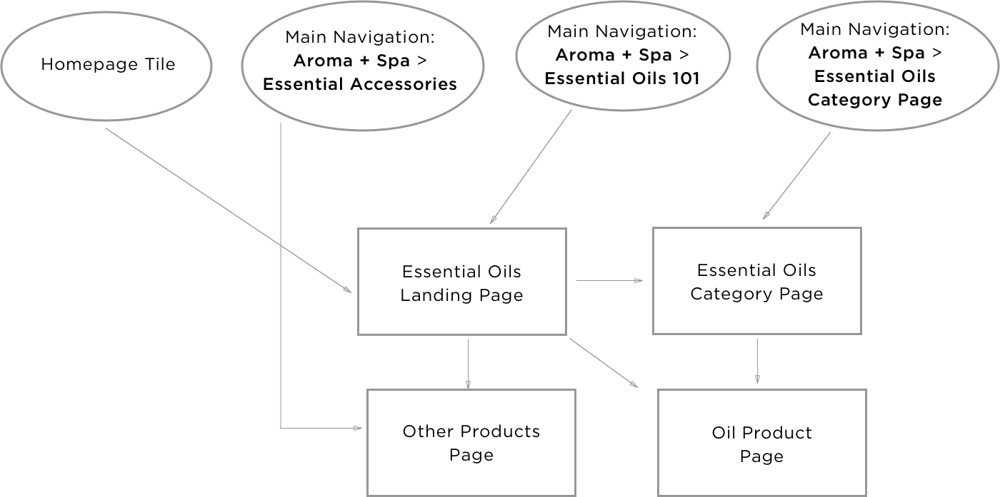
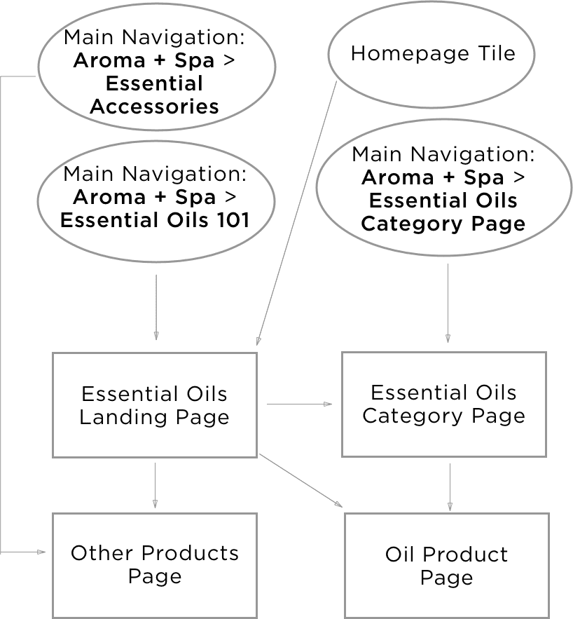

Essential Oils 101
Essential Oils 101
Essential Oils 101 is a landing page to assist customers who are new to essential oils.
Scroll to see the entire page.
Category page of oils linked to from the landing page.
The challenge
The user problem: Product returns, misuse, and online session abandonment.
Product returns and Customer Service calls revealed that customers misused essential and fragrance oil products that led to health concerns. Upon further discovery, store employees generally did not have enough product knowledge regarding the safety and practice of mixing oils to communicate to customers.
An uninformed employee culture resulted in the miscategorization of these products online that led to confused and unhappy customers.
The solution: A dedicated landing page.
Research and discovery
UX lab discovery:
Role: Follow-up interviewer and recording analyst.
Methods: Retrospective Probing, screen recordings and surveys.
Initially, our UX test was greared toward how users navigate our dropdown menu. From this test our users failed a question: to add an essential oils kit to their cart. In the feedback session my teammate probed retrospectively while I asked final follow up questions and collected insights from video recordings and contributed insights.
Although the test was meant to focus on our navigation menu, the results showed that 8 out of 9 participants failed to differentiate our fragrance oils, which are chemicals, and our natural essential oils.
Resolving unexpected problems
Ideation #1: IA - Separatation of navigational content.
Ideation #2: Informational landing page
IA challenge: The team's instinct was to find a simple and adminable (definition: user with CMS admin access who can perform changes) solution. We separated fragrance oils and its accessories from essential oils in the main navigation. We hoped a simple categorization change in the nav would be enough to differentiate, but customers continued to call in asking how to use essential oils.
Customer journey and education: In our second attempt we realized there was far more information to understand than a user would gain merely by changing our nav IA. An Essential Oils 101 landing page was the solution to group together related products as an unbrella in the navigation and to inform customers. It needed to be broad enough to give an overview of the product ecosytem and product-driven for shoppers to quickly find what they want.
Sketching wireframes
Role: Mapped user flow. Wireframed category page.
Tools: Sketch, InVision.
I began visualizing the solution by first mapping out the user's possible entry points to the landing page to a customer conversion.
User flow map from entry points to conversion
 Gathering research:
I collaborated with the eCommerce team using their research from competitors, the product buyer, and the manufacturer to sketch wireframes for the category page and navigation menu.
Designing the category page of oils:
Objective: Display like products.
Challenge: The template is uncustomizable.
Solution: Create a new custom template.
Labels to group product together
Relaxing
Calming
Uplifting
Energizing
Synergistic Blends
Essential Oils Kits
I used color labels to group like product together. I designed the labels to look familiar to the labels on the product packaging. Anchor links from the landing page to the scroll position of a label shortens the user's time from scrolling through many products as our inventory continues to grow.
It wasn't financially viable to rebuild the template. Redesigning the template was outside the scope of the project. It was more efficient for me to create a custom block in the CMS system that looked like the existing template.
Compromises along the way...
Identifying and maintaining the product's truth through the development cycle was a wicked challenge.paraphrased from Devin Moore
The original intent of this project was to give unknowledgable customers health, safety, and benefits information.
Carousels: Stakeholders wanted the landing page to be heavily product-driven. This changed our original context of the design from educational to marketing. The requirement to show a lot of product led me to extend a current carousel pattern on our site.
FAQs: Stakeholders were concerned about liability. There were limitations on how the information needed to be presented so I decided on an FAQ format.

Impact
This was a great step forward in having information on our site to educate our customers.
A bigger beast than we realized: The impact of this project was underwhelming. We did not see a noticable increase in product sales and we've found that product misinformation is spread far and wide amongst our store employees.
A customer service resource: Customer service has reported less confusion from online shoppers and the landing page is used as a resource for customer service. This has led me to believe that we need to address this issue in more ways than just when a customer is shopping online.
Learnings
If I got another shot at this project I would include redesigning product packaging and designing informational visuals in store to make it more clear that fragrance and essential oils are very different.